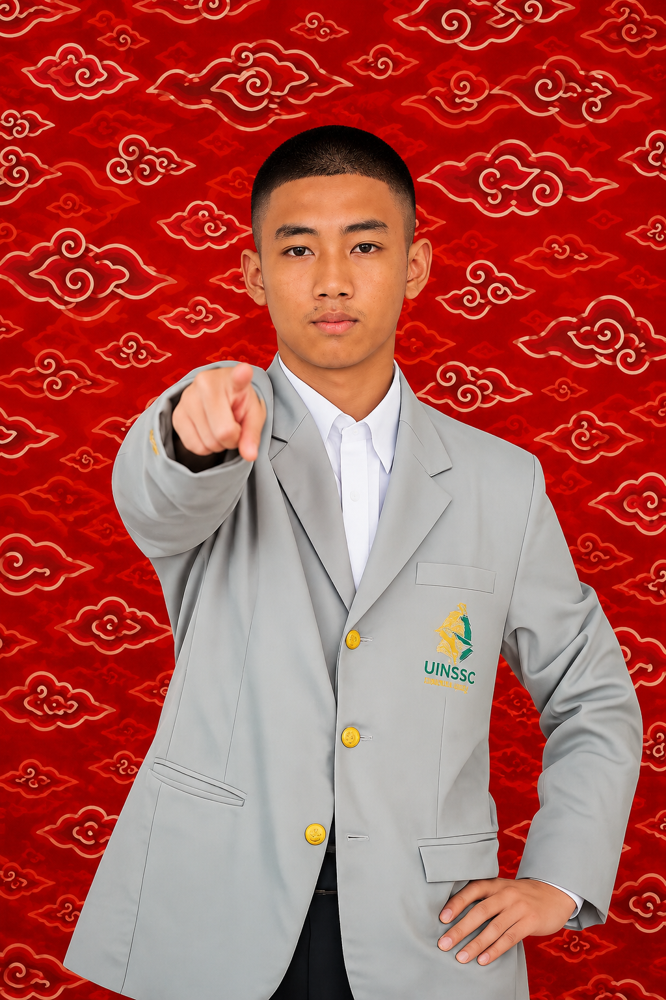
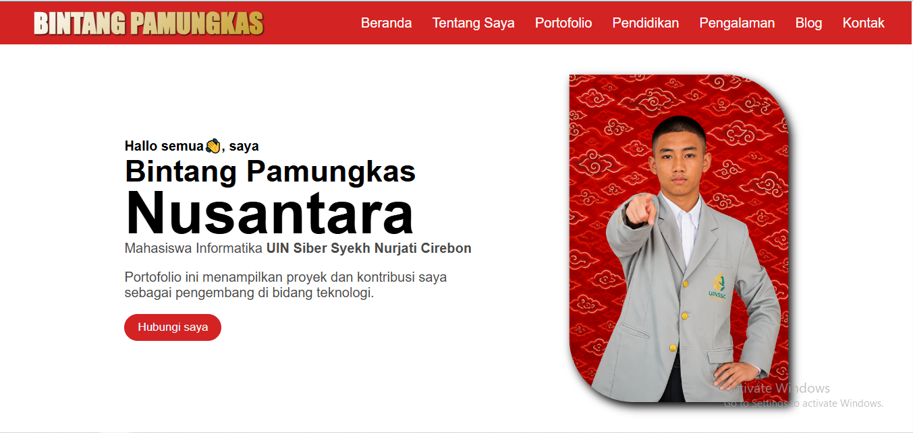
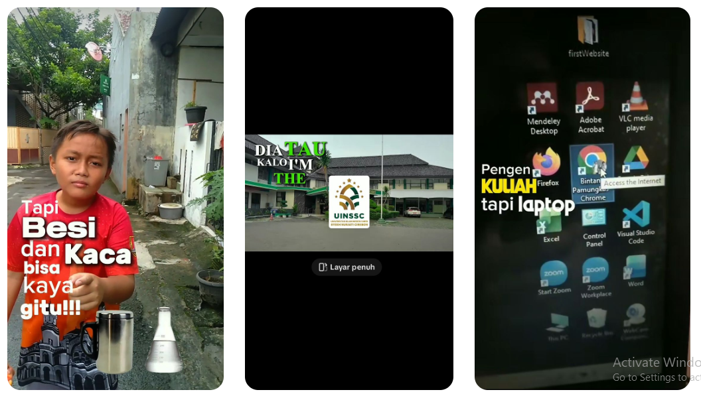
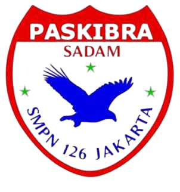
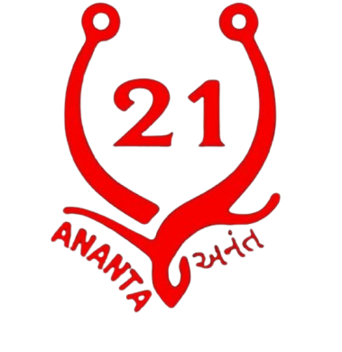
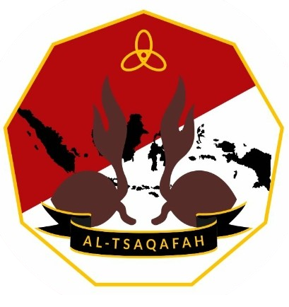

Mahasiswa Informatika UIN Siber Syekh Nurjati Cirebon
Menampilkan proyek, pengalaman, dan perjalanan saya dalam mengembangkan solusi digital yang berfokus pada teknologi, desain, dan kebermanfaatan.
Hubungi Saya
Berawal dari keyakinan bahwa teknologi terbaik lahir dari rasa ingin tahu yang luas, perjalanan saya berfokus pada pengembangan solusi digital yang memadukan teknologi, riset, kreativitas, dan kepedulian terhadap lingkungan. Tiga tahun menempuh pendidikan di Pondok Pesantren Al-Tsaqafah di bawah bimbingan KH. Said Aqil Siradj membentuk karakter yang disiplin, berintegritas, dan menjunjung tinggi semangat belajar sepanjang hayat.
Fokus utama saat ini adalah pengembangan website, mulai dari landing page, company profile, hingga solusi berbasis web yang mengutamakan pengalaman pengguna dan performa. Di luar pengembangan perangkat lunak, ketertarikan pada riset lingkungan, karya tulis ilmiah, desain visual, dan editing konten terus menjadi bagian dari proses belajar dan berkarya. Pengalaman mengikuti kompetisi karya tulis ilmiah bersama Ecoton tentang mikroplastik memperkuat pendekatan yang berbasis data dan pemecahan masalah.
Teknologi bukan sekadar tentang membangun aplikasi, melainkan menciptakan solusi yang memberi manfaat dan dampak positif bagi masyarakat serta lingkungan.
"Learn deeply. Build boldly. Leave a positive impact."
Fokus & keahlian saya (saat ini)
● HTML
● CSS
● JavaScript
● WordPress
● Responsive Website
● Environmental Sustainability
● Technology
● History
● Scientific Writing
● Environmental Research
● Problem Solving
● UI Design
● Photo & Video Editing
● Branding
● Content Creation
Saya selalu terbuka untuk kolaborasi, diskusi proyek, atau peluang profesional baru. Silakan hubungi saya melalui Email, WhatsApp, atau melalui jaringan profesional di bawah ini.

Portofolio Pribadi menampilkan koleksi proyek dan keahlian yang telah dikembangkan selama berkarir di dunia pemrograman.

Beberapa hasil editing video yang saya kerjakan dapat dilihat melalui TikTok @b1ntangz sebagai bagian dari portofolio dan proses berkarya saya.



Dibuat oleh Bintang Pamungkas Nusantara, hanya menggunakan HTML, CSS & JavaScript.